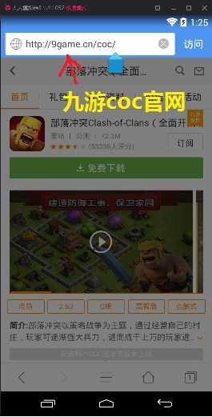

- 安装安卓模拟器
- 安装游戏
- 安装辅助
- 运行辅助
什么是安卓模拟器？
安卓模拟器就是一个在电脑上运行的程序，它模拟一个安卓手机，你可以用鼠标来代替手指点击，然后用键盘输入文字。模拟器可以安装安卓的安装包（apk文件），运行安卓的APP。
为什么要用模拟器？
推荐在电脑上使用模拟器运行辅助，因为手机二十四小时挂着实在费手机，而且目前辅助只支持720x1280 DPI320的手机，别的手机无法运行。而基本上所有的模拟器都可以设置分辨率的，所以基本上所有模拟器都可以运行辅助。
用什么模拟器好？
推荐使用天天模拟器。（因为辅助主要在天天模拟器上测试:P) 其他的模拟器，比如雷电，海马，猩猩助手，靠谱助手，新浪的手游助手神马的也统统可以。
如何安装模拟器？
模拟器安装和普通的电脑上的程序一样，就是下载个exe文件，然后双击打开就可以了。如果用天天模拟器可以去它们的官网下载安装包:http://www.ttmnq.com/
如何配置模拟器？
安装好模拟器后，把分辨率设置成720x1280非常重要。不同的模拟器设置方法不一样，不懂的可以问百度。以下以天天模拟器为。安装好后打开模拟器，可能载入有点慢。然后会进入这个界面：
然后按图点击按钮。
 之后会弹出一个对话框。
之后会弹出一个对话框。
保存了之后，需要重启模拟器。重启之后模拟器变成竖屏。这样设置就完成了。
有几种方式可以安装游戏：浏览器下载安装，用模拟器自带的应用商店安装，或者添加本地应用。
如果用浏览器下载：在模拟器里打开浏览器(注意不是在电脑里打开浏览器)，进入对应的游戏版本的官网，比如你的账号是九游的，就去九游官网。不知道网站地址可以问百度。在官网找到游戏，下载到手机，然后安装。这个和手机上下载 装游戏是一样的。

另一种办法，你先去下个电子市场，比如百度手机助手，再在电子市场里找到游戏安装也是可以的。
安装完成后，运行游戏，登陆账号。如果一切正常就OK了。
辅助其实也是一个app，和普通的app一样安装。
打开电脑上的浏览器(不是模拟器里的)，打开百度网盘地址。下载最新版辅助。
然后打开模拟器，点击“添加本地应用”
找到刚才下载的辅助，也就是名字类似“天墉城COC辅助2016-12-26_234855.apk”的文件。点打开。
辅助就被安装到模拟器了。安装好后，模拟器会自动打开辅助app。
如果你回到桌面，会发现辅助app出现在桌面了。以后可以点击它运行辅助。
辅助运行超级简单。打开辅助app，等一会就会看到配置界面。
1-5看情况修改。比如要闪黑水矿，就勾选3，并设定期望的每个闪电收益（能抢到那么多黑水才放闪电）。要自动升级墙，就在5选择用金升级还是用水升级，还是都用；并且指定升级墙的等级范围等等。
战术，推荐选择“弓蛮巨打鱼（金水黑均衡）”或者“全力抢黑（八本以上，抢黑快）”。前者金水黑都打，后者打黑超快，但是金水就打得少了。
然后点启动功能。就会回到桌面，右方出现个小人。先点那个小人，再点弹出的启动按钮。辅助就开始运行了。